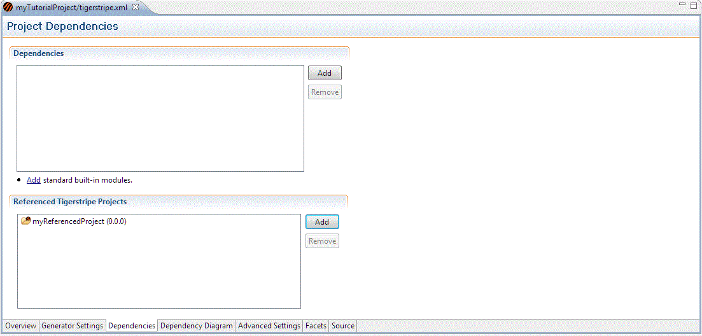

Because Service Contracts are meant to interact within a complete SOA Solution, very often they will share common information models. To avoid duplication and increased complexity, such commonalities between Tigerstripe projects can be saved into a Tigerstripe Module. The module can further be referenced by other projects. These referenced Tigerstripe Modules are called Project Dependencies.
Project Dependencies are a list of referenced Tigerstripe Modules required for a Tigerstripe Project. These dependencies typically contain common information models, for example a common definition of a Customer Entity, so that all Service Contracts of an end-to-end solution are based on common definitions.
Dependencies can be added to and removed from the list of dependencies of a project through the Dependencies Tab of the Tigerstripe Descriptor Editor as show below:

Note: If a project dependency cannot be satisfied (for example a missing file), the project will likely not be valid.
Project Dependencies are references to a set of Tigerstripe Modules, for example, pre-packaged, binary-like, versions of Tigerstripe projects. Refer to Import/Export Tasks for more details on how to export an existing Tigerstripe Project into a module that can be referenced as a dependency by other projects.
Although Tigerstripe modules have a .jar file extension, they contain additional Tigerstripe specific information to further identify the content of a module. This additional information is displayed when selecting a referenced dependency in a Tigerstripe project descriptor (as show in the above image):
- Module ID: a unique module identifier set when the module was created through a project export operation.
- Builder Version: the version of Tigerstripe that was used to create this module. This is used to ensure compatibility between Tigerstripe versions.
- Packaged Date: the date at which the module was created through an export operation.
- Project Name: the project name as it appeared in the Tigerstripe project that was exported into this module at the time of the export operation.
- Version: the project version exported into the module at the time of the export operation.
- Description: the project description exported into this module at the time of the export operation.